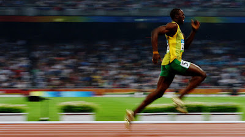
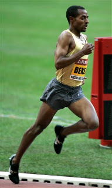
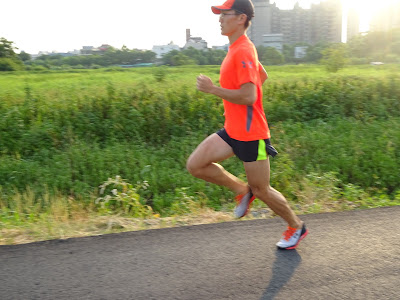

跑步前傾的時機？比賽時需要一直保持前傾嗎？
每次講完跑步技術的課之後，總有不少人在課後會來信(或用臉書傳訊息)來問：前傾的時機是什麼時候？跑一場比賽下來需要一直保持相同的前傾角度嗎？這次安平夜跑的太榮再提出來後，就有股衝動想再用文字整理與分享出來……
先回答第二個問題，我的答案是「不用」。
若是在 400 公尺的操場上進行比賽(或是在完全平坦的道路上進行馬拉松)，技術優秀的菁英跑者真正需要加大的前傾角度就只有在開賽的前幾秒而已。從物理上來看：
- mа=mg × sin α→
- 消去人的體重 m，
- 因此 а=g × sin α
也就是說，水平加速度(а)跟前傾角度(α)成正比，前傾角度愈大，加速度愈大。但在比賽時我們不可能一直加速，所以也就不用一直前傾那麼多。
試想一下，如果有兩位跑者的 5 公里最佳成績都是 20 分，也就是平均步速是 4:00/km (時速 15km/hr)。起跑時速度是 0，要「加速」到時速 15 公里，就是要靠前傾(當然推蹬也可以，只是比較費力)。加到你所能維持的速度後，接著就只要「維持等速」→保持慣性。
那此時還要前傾嗎？
要的。但已經不用再像起跑加速時一樣向前傾那麼多，此時前傾的目的是為了克服「保持慣性時所產生的阻力」，這些阻力有三種：
- 風阻：慢跑時當然不用考慮風阻，但從流體力學的公式來看，風阻＝1/2×空氣密度×移動速度的平方×風阻係數×身體橫斷面積。速度加快一倍，風阻會成平方倍數成長。所以當你跑到時速 15 公里以上(四分速)時，風阻可是很可觀的。
- 腳掌落地時所產生的摩擦力
- 腳掌跨到身體前方時所形成的煞車效應。
在維持速度時，除了風阻是你無法減少的之外，摩擦力和煞車效應都可藉由跑步技巧來減低。所以在判斷兩位 5 公里 PB 都是 20 分的跑者誰的技巧比較好，可以看他們在跑步的過程中誰的前傾角度比較小。前傾角愈小，代表他的跑步技巧比較好，因此產生的額外阻力比較少。反之，另一位 5 公里 PB 也是 20 分但平均前傾角度較大的跑者，則代表他的技術較差，但體能較好。
不管技巧好壞，人體的結構在跑步過程中(起跑時的動作不算)所能維持的最大前傾角度極限是 22.5 度，目前量測出最大的前傾角度是百米的世界紀錄保持人博爾特(Usain Bolt)，他在打破世界紀錄時，最後 60~100 公尺的平均前傾角度是 21.4 度。

【目前的男子百米世界紀錄保持人 Usain Bolt】
我們再來看看長距離選手：目前 10 公里的世界紀錄是由衣索比亞的凱內尼薩．貝克勒(Kenenisa Bekele)於 2005 年 8 月 26 日在比利時布魯塞爾所創下，時間是 26 分 17 秒 53 (時速為 22.83 km/hr，步速為 2:38/km)。他在這個速度下的平均前傾角度是 17.3 度。當我知道這個數據，也開始使用影像分析來研究其他菁英跑者的跑姿時，發現不少長距離跑者的平均前傾角度也是 17 度，但他們的步速也才每公里 3 分多，離 2:38/km 還有一大段差距，為什麼呢？這是一開始困惑我的地方。

【目前的男子十公里紀錄保持人 Kenenisa Bekele】
後來才知道答案很簡單，因為這些跑者的動作產生太多額外的阻力，也就是落地時的摩擦力與煞車效應太大。當然，若他們的技巧(與腿長)都跟貝克勒一樣，理論上在 17.3 度的前傾角度下都可以跑出每公里 2 分 38 秒才是，但能否維持就跟體能與肌耐力有關了。
但因為大部分的跑者技巧都沒那麼完美，具體來說就是：
- 腳掌觸地時間較長，因此落地的摩擦力較大
- 腳掌向前跨得離臀部(重心)較遠，因此煞車效應較大
在相同的前傾角度下，卻只能跑出更慢的速度，正是代表「每一步都一直減速再重新加速的結果」。
對於技術優良的長跑者而言，在跑馬拉松時，需要加大前傾角度的時間只有：在起跑時（取得最初的加速度）加速達到自己的 M 配速(Marathon Pace)、進補給點有停頓重新啟動與上坡時。
另一點需要注意的是，要確定自己是不是有前傾的動作，需要拍攝與錄影，自己的感覺是不準確的，而且大部分的人會誤以為前傾是肩膀往前，但真正的前傾部位應該是臀部才是，肩膀和臀部應該盡量保持在同一鉛直線上。透過攝影，你才能確定實際的跑姿是否與臀部前傾(上身挺直)的感覺一樣。

【2015/08/02 中壢西園路河堤旁訓練剪影】